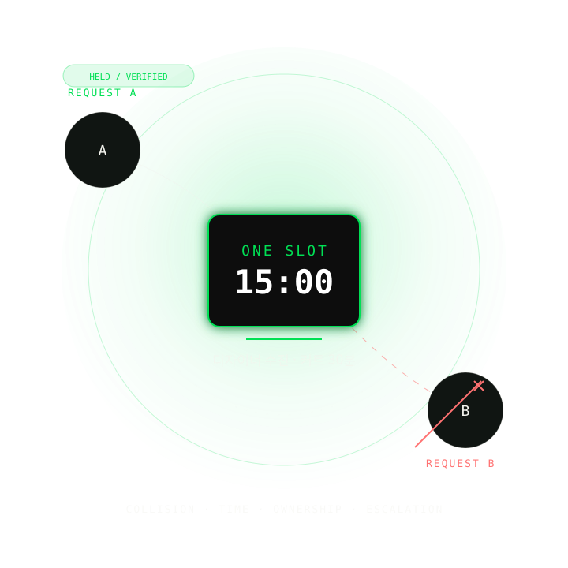
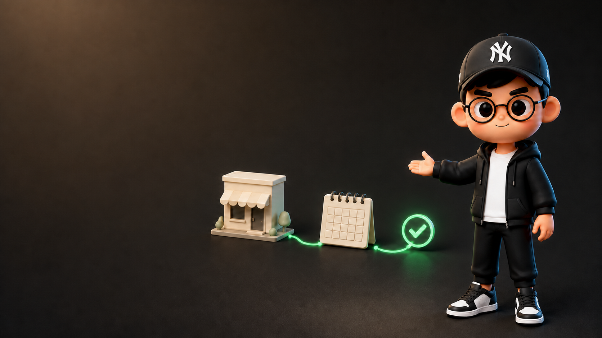
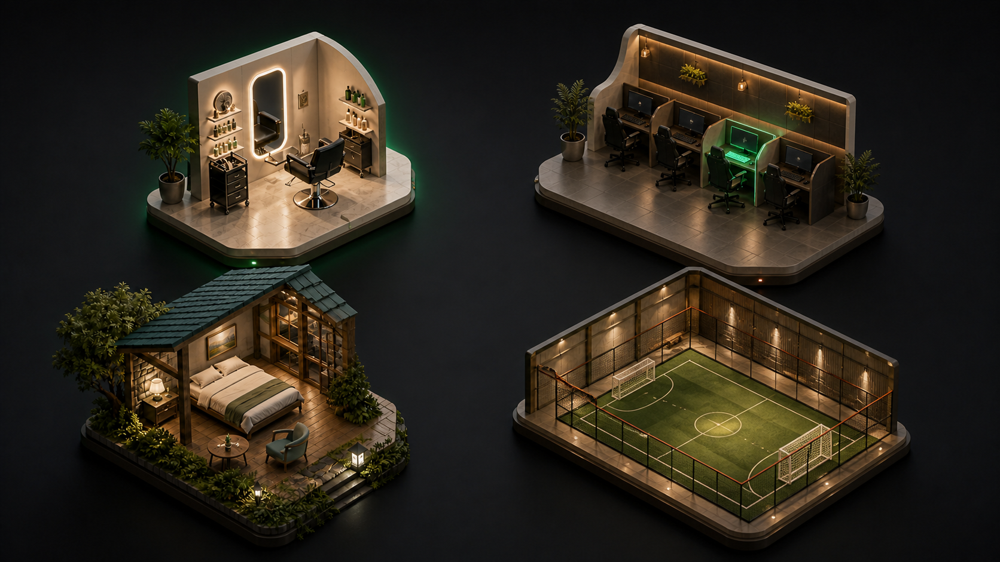
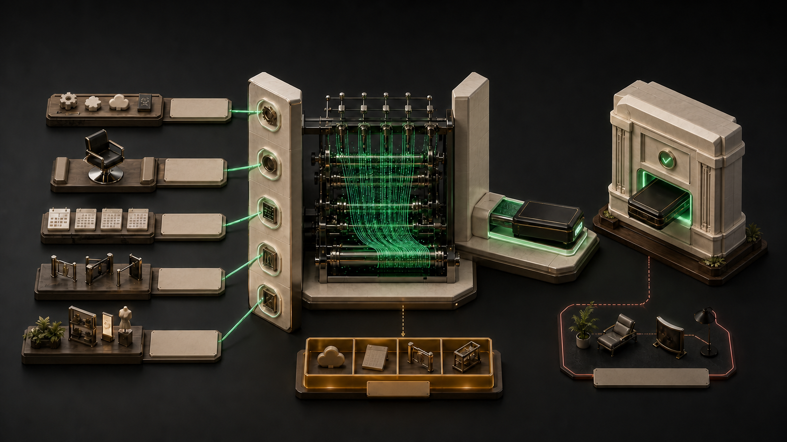
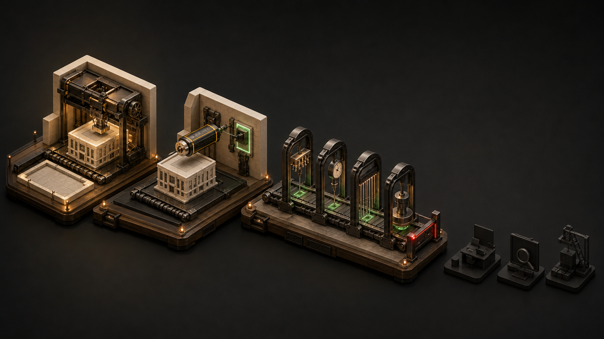
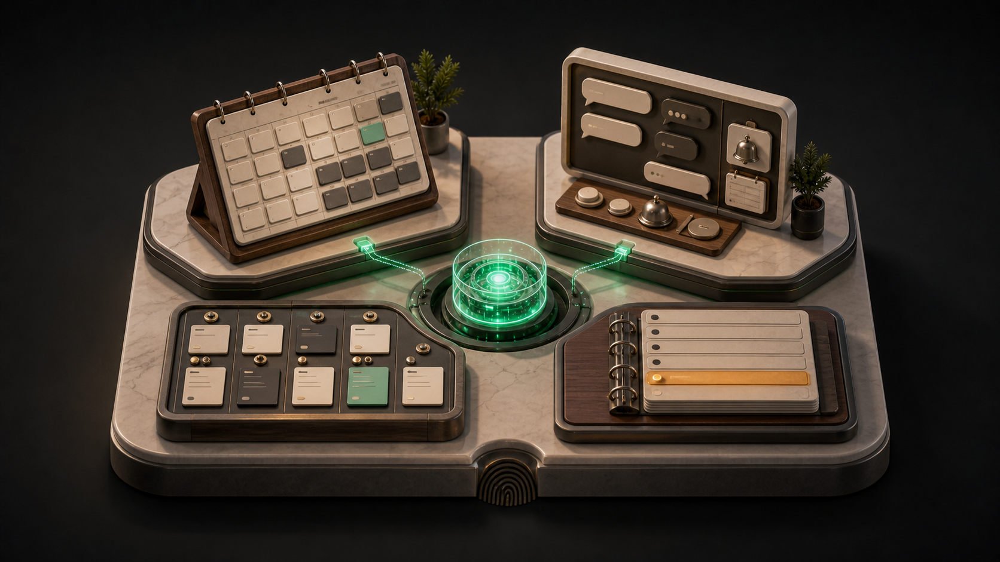
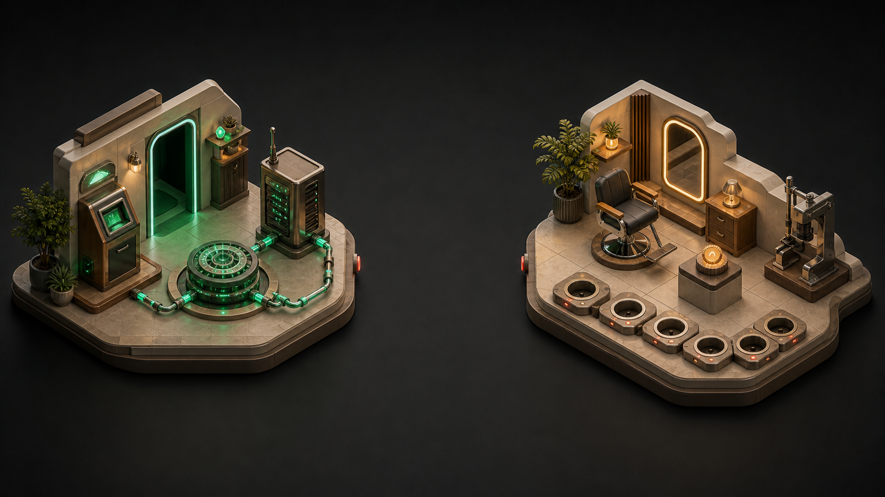

JEOMWON / FIELD WORKSHOP
60분 · 인터넷 없이 기본 점검
60분 안에
예약 서비스
만들기
대화로 예약을 받고, 같은 시간의 중복을 막고,
어려운 요청은 운영자에게 넘기는 흐름까지 만듭니다.

완성 예제 · 한 자리, 두 손님, 네 경계
15:00 디자이너 1명을 두 손님이 요청해도
충돌·홀드·소유권·취소 규칙이 한 번만 예약시킨다.
오늘 증명: scaffold → inject → install/typecheck/lint/build · 다음: setup/live QA/deploy · [R1-R4]

AI 서비스 100+개인 프로젝트 200+개발 경험 10년
02 · 지니 소개
안녕하세요,
지니입니다
AI 서비스를 직접 만들고 운영해 왔습니다. 오늘은 어려운 개발 말 대신
가게 운영 언어로 하나씩 설명할게요.
AI를 설명하는 사람이 아니라,
AI 제품을 반복해서 출하한 개발자입니다.
오늘은 학력보다 실제로 만든 수와 운영 경험만 남겼습니다.
100+생성형 AI SaaS 기획·개발·운영
200+사이드 프로젝트 개발
10YAI 기반 풀스택 개발자
출처: 강사 제공 프로필

헤어숍 · 좌석PC방 · 자리펜션 · 객실풋살장 · 코트
03 · 업종 선택
오늘 만들 가게를 고릅니다
동률이면 헤어숍
헤어숍, PC방, 펜션, 풋살장 가운데 현장에서 하나를 고릅니다.
표가 같거나 응답이 없으면 헤어숍으로 진행합니다.
FALLBACK 01
헤어살롱
커트 30분 × 디자이너 1명
02
PC방
좌석 1개 × 1시간
인접 좌석·자정 넘김 미지원
03
펜션
객실 1실 × 1박
다박·부가서비스 미지원
04
풋살장
코트 1면 × 1시간 · 날씨/예약금 없음
거수로 결정합니다. 동률·무응답이면 헤어살롱. capability 밖 요구는 후속 확장으로 분리합니다.
[R15-R16]
충돌 방지시간 유지소유권사람 이관
04 · 예약을 지키는 장치
예약 화면보다 먼저
네 가지 약속을 만듭니다
같은 시간을 두 손님에게 주지 않고, 예약 주인을 확인하고,
취소와 어려운 요청을 정해 둔 방식대로 처리합니다.
부분 완성 · 한 자리, 두 손님, 네 경계
15:00
커트 · 디자이너 수진 · 30분
손님 A
손님 B
최종 책임자: ______
이 강의에서 Agentic SaaS는 대화가 서버 도구로 상태를 바꾸고,
권한·정책·실패를 서버 코드가 책임지는 SaaS입니다.
같은 자원·시간 충돌을 한 트랜잭션에서 막는다
홀드 만료와 취소 시점을 서버가 판단한다
threadId가 아니라 사용자 신원으로 소유권을 확인한다
자동 처리할 수 없으면 운영자에게 넘긴다
기본 설계도가게 정보 반영실제 서비스 실행
05 · 만드는 단계와 쓰는 단계
가게 이야기를 넣으면
예약 서비스 뼈대가 나옵니다
이미 준비된 기본 설계도에 업종 정보만 넣습니다.
손님 화면, 운영자 화면, 예약 기록은 처음부터 따로 준비됩니다.
CODING-TIME PLANE
TemplateCANONICAL WORKSPACE
Domain packCLOSED CONFIG
GeneratorCOPY → STRICT INJECT → OFFLINE CHECKS
Verify = install·typecheck·lint·build. live QA는 SKIP.
→
RUNTIME PLANE
Public WebNEXT.JS
AppNEXT.JS + AUTH
BackendCONVEX
AgentONE AGENT RUNTIME
생성 뒤에는 독립적으로 실행·배포되는 제품이다.
[C1][C2] · R1-R10
06 · 역할 나누기
화면·예약 기록·인터넷 공개를
세 도구가 나눠 맡습니다
NEXT.JS · 화면
손님과 운영자가 보는 곳
- 가게 소개와 예약 시작
- 손님 예약과 운영자 관리
- 두 화면을 따로 관리
CONVEX · 예약 기록
기록과 규칙을 지키는 곳
- 예약 상태를 최신으로 보여 줌
- 빈자리 확인과 저장을 한 번에
- 나중에 할 일을 등록
VERCEL · 인터넷 공개
두 화면을 공개하는 곳
- 가게 안내 화면 공개
- 예약·운영 화면 공개
- 예약 데이터는 따로 연결
한 폴더에 있어도 세 부분이 한 번에 공개되는 것은 아닙니다.
[R6-R10]
현재 상태 보기한 번에 예약 변경나중에 처리
07 · 예약 장부와 규칙
Convex는 예약 기록과
예약 규칙을 함께 지킵니다
예약이 바뀌면 화면도 바로 바뀝니다. 빈자리 확인과 저장을 한 번에 처리해
두 사람이 같은 시간을 잡지 못하게 합니다.
TABLES · CURRENT TRUTH
reservation_2048수진15:00held
고객·자원·예약이 지금 어떤 상태인지 저장합니다.
02Mutationread → check → write를 한 transaction으로 실행
03Scheduler나중 일을 durable하게 등록, punctual 보장은 아님
예약 정책은 Convex가 아니라 Jeomwon mutation 코드가 구현합니다.
[C3] · R11-R13
임시로 자리 잡기예약 확정시간 변경취소·운영자 확인
08 · 항상 지키는 약속
AI가 뭐라고 말해도
예약 규칙을 다시 확인합니다
AI의 안내는 실수할 수 있습니다. 실제 예약을 바꾸기 직전에
자리, 시간, 예약 주인, 취소 가능 여부를 다시 확인합니다.
held의 유효한 취소는 즉시 cancelled, 수용량 반환
confirmed/rescheduled가 취소창 안이면 escalated, 수용량 유지
threadId는 라우팅 문맥일 뿐 신원·권한이 아님
[C3] · R14

자원시간정책표현
09 · 운영 정보를 설정으로
가게 운영 이야기를 넣으면
업종에 맞는
예약 서비스가 됩니다
서비스, 예약 대상, 시간, 취소 규칙, 안내 문구를 정해진 칸에 넣습니다.
범위 밖의 기능은 마음대로 만들지 않고 다음 작업으로 남깁니다.

자연어가 임의 코드를 쓰는 것이 아니라 닫힌 설정을 채웁니다. 팩 밖 전문 기능은 생성 후 별도 확장입니다.
[R1-R4]
10 · 가게 인터뷰
수업 뒤 그대로 쓰는
가게 인터뷰 질문
인터뷰 → 설정 파일 → 내용 확인복사해서 사용
내 업종을 지원 범위 안에서 인터뷰하고,
확정한 값을 domain-pack.json(업종 설정 파일)으로 정리해줘.
모르는 값은 추정하지 말고,
지금 만들 수 없는 기능과 중복 예약·예약 주인 확인 규칙을
따로 표시해줘.
결과에 꼭 들어갈 것
확정한 내용 · 아직 정하지 않은 내용 · 지금 만들 수 없는 기능 · 결정할 사람
다른 업종 연습 · 빈칸부터
____
풋살장 · 코트 ____ · ____분
팀 ____
팀 ____
약속: ____ / ____ / ____ / ____

설계도 복사가게 정보 반영파일·코드 기본 점검
11 · 직접 만들어 보기
실습은 세 단계입니다
복사 → 설정 반영
→ 기본 점검
명령 한 번으로 기본 설계도를 복사하고 가게 정보를 넣은 뒤,
필요한 파일과 코드가 맞는지 인터넷 없이 확인합니다.
# 1. domain-pack.json을 저장한 뒤
$ bun skill/scripts/bootstrap.mjs \
../salon-demo "Salon Demo" \
./student/salon-domain-pack.json
scaffold template → build/salon-demo
inject domain.config.ts
verify install · typecheck · lint · build
PASS OFFLINE VERIFIED
# 화면 실행 · 인증 · live QA · 배포 증거가 아니다.
SCAFFOLD정본 template을 새 target으로 복사
INJECT닫힌 설정과 선택형 이메일 샘플 주입
VERIFY오프라인 계약 검사. live QA는 별도
안전 입력: “2시간 뒤”, “내일” 또는 직접 slot 선택. literal 15:00 문장은 데모에서 쓰지 않습니다.

개념 지도 · 실화면 아님고객 캘린더운영 대시보드사람 이관
12 · 예약 서비스 둘러보기
예시 화면으로
손님 예약부터 운영자 확인까지
손님이 시간을 고르고 예약을 요청하면 운영자는 같은 기록을 보며 관리합니다.
이 이미지는 흐름을 설명하는 개념 지도이며 실제 실행 화면은 아닙니다.
커트 예약
8월 12일 · 디자이너 수진
14:0014:3015:00
15:3016:0016:30
예약 도우미
내일 오후 커트 가능한 시간을 찾아드릴게요.
14:30 수진 디자이너 슬롯이 있습니다.
PRE-PROVISIONED REFERENCE · cd8d222 · AGENT_RUNTIME=mock
사전 provision된 참조 화면입니다. 방금 bootstrap한 target의 live 실행이라고 주장하지 않습니다.
고객 예약과 위젯
대화형 예약 진입
운영자 대시보드
에스컬레이션과 감사 기록
계정 연결11가지 실제 점검두 화면 공개예약 데이터 연결
13 · 생성 다음 단계
파일이 만들어진 것과
실제 운영 준비는 다릅니다
오늘은 서비스 뼈대와 기본 점검까지 합니다.
계정 연결, 실제 동작 점검, 인터넷 공개는 수업 뒤에 이어서 합니다.
01Convex login
☐ bun x convex login · 계정 연결
02bun setup + QA
☐ OAuth/dev deployment · Chromium · 11-gate contract
03Vercel × 2
Web과 App을 독립 project/root로 연결
04Convex
별도 deployment와 deploy key, URL 확인
오늘 완료: bootstrap · VERIFY PASS · QA SKIP 확인
[C1][C2] · R3-R4, R8-R10

계정 구독 · 구현됨예약 거래 · 미구현
14 · 결제 범위
계정 이용료와
예약 한 건 결제는 다릅니다
계정 구독 기능은 준비되어 있지만 기본값은 꺼져 있습니다.
예약금, 예약별 결제, 환불 연결은 아직 만들어야 합니다.
CONNECTED · DEFAULT OFF
계정 플랜 구독
- Polar subscription checkout
- customer portal
- webhook 기반 구독 상태
NO
LINK
NOT IMPLEMENTED
예약 건별 결제
- 예약 checkout
- 금액·통화·주문 연결
- 보증금·환불 상태
reservation hold는 슬롯 임시 점유이지 카드 승인 hold가 아닙니다. Polar sandbox E2E는 미실행입니다.
[R17-R20]
1 예약 대상2 운영 질문3 설정 확인4 서비스 만들기5 기본 점검6 실제 점검7 인터넷 공개
15 · 혼자 다시 만들기
2~3일 안에
다른 업종으로 한 번 더
무엇을 예약할지 정하고, 운영 방식을 묻고, 설정을 검토한 뒤
같은 일곱 단계를 혼자 다시 해보세요.
01업종과 예약 단위 고르기
02운영 인터뷰 실행
03domain pack 검토
04bootstrap 실행
05VERIFY PASS
06setup과 live QA
07Vercel ×2 + Convex
빈 재구성 · 한 자리, 두 손님, 네 경계
자리 ____ · 손님 ____ / ____ · 경계 ____ / ____ / ____ / ____
48–72시간 뒤, 오늘과 다른 업종으로 같은 7단계를 다시 실행하세요.